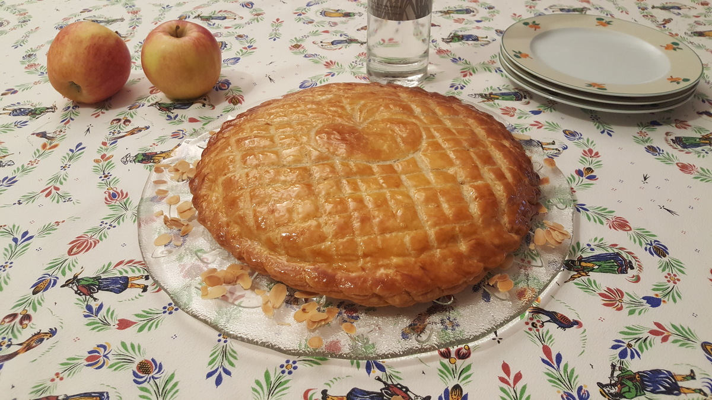

Galette des rois amandes-pommes

Le blog de pâtisserie pour gourmands
Pour cette galette j’ai décidé de me lancer et de faire ma première pâte feuilletée rapide et facile.
Pâte feuilletée
Crème d'amande
Garniture aux pommes
Dorure
Finition
Quantité : 1 grande galette pour 8 personnes
Four : préchauffer à 200°C
Cuisson de la galette :Temps de cuisson : 48 minutes
Temps de préparation : 1 h
Conseil : laissez votre beurre 5 h à température ambiante avant de commencer votre recette.


Pâte feuilletée
Sur un plan de travail, versez la farine et le beurre froid préalablement coupé en dés.
Mélangez le beurre dans la farine sans écraser. Faites un puits
Faites dissoudre le sel dans l’eau froide.
Versez l’eau/sel au milieu du puits farine/beurre, et commencez à mélanger les ingrédients sans trop écraser les dés de beurre. Il faut que les ingrédients s’amalgament entre eux sans faire disparaitre les dés de beurre
Rassemblez la pâte en un rectangle.
Etalez la pâte en long soit un rectangle de 15 cm sur 45 cm.
Vous devez rabattre le 1/3 de la pâte inférieure sur le 1/3 du rectangle du milieu et le 1/3 supérieur sur les 2 autres. (voir le détail du pliage pâte feuilletée) Tourner le rectangle de votre pâte d’1/4 de tour. Recommencez cette opération une fois, puis enveloppez la pâte dans un film alimentaire et laissez reposer 10 minutes au réfrigérateur.
Prenez votre pâte et la posez face à vous comme si c’était un livre, le côté de la pâte qui se soulève est à droite. Etalez la pâte comme précédemment et pliez en 3. Tournez d’1/4 de tour et réaliser l’opération encore 2 fois. Divisez la pâte en 2 boules et filmez-les. Remettez la pâte au réfrigérateur 10 minutes pour qu’elle ne soit pas trop molle.
Cuisson des pommes
Epluchez les pommes.
Coupez les pommes en dés de 2 cm environ.
Dans une casserole mettre les pommes en dés, le beurre et le sucre.
Cuire jusqu’à ce que les pommes soient molles mais sans s’écraser comme une compote. Si vous aimez vous pouvez garder un peu de croquant à la pomme.
Laissez refroidir.
Amandes effilées
Sur une plaque de cuisson couverte d’un papier sulfurisé, répartissez les amandes effilées. Mettre au four 5 minutes puis retournez les amandes pour qu’elles dorent uniformément et laissez cuire à nouveau 3 ou 4 minutes. Laissez refroidir hors du four.
Crème d’amande
Mélangez le sucre, la poudre d’amande et la maïzena.
Mettre le beurre mou dans un récipient et le fouettez jusqu’à obtenir une texture pommade. Vous pouvez le passer quelques secondes au-dessus d’un bain-marie pour l’assouplir plus facilement au fouet. Il ne faut jamais qu’il devienne liquide mais crémeux.
Ajouter sur le beurre pommade le mélange n°1 (sucre/poudre d’amande/maïzena) en 2 ou 3 fois et mélangez à la spatule.
Ajoutez les œufs et mélangez à nouveau.
Ajoutez le rhum et l’amande amère, mélangez.
Dorure
Battre le jaune, l’eau et le sel. Réservez.
Montage de la galette
Disposez sur une plaque de cuisson un papier sulfurisé.
Etalez en forme de disque de 27 cm de diamètre votre première pâte feuilletée sur votre plan de travail fariné. Déposez votre pâte sur la plaque de cuisson.
Avec un pinceau étalez la dorure sur les bords de la pâte feuilletée d’environ 2 centimètres. Cela délimitera l’endroit où vous ne mettrez pas de crème d’amande.
Etalez la crème d’amande avec une cuillère ou une poche à douille pour une meilleure répartition. Avec la poche à douille il faudra partir du centre de la pâte et former un escargot jusqu’à la délimitation faite avec le pinceau.
Mettez la fève dans la crème.
Répartissez les dés de pommes sur toute la surface de la crème d’amande puis les amandes effilées.
Etalez la deuxième pâte feuilletée sur un diamètre de 27,5 cm.
Déposer la deuxième pâte feuilletée sur la galette.
Pressez avec le bout des doigts le contour des deux pâtes. La marque de vos doigts apparaitra.
Chiquetez les bords avec le dos d’un couteau.

Dorez avec le pinceau le dessus de votre galette.
Laissez reposer 20 à 30 minutes au frais. (Cette étape n’est pas obligatoire si vous êtes pressez)
Dorez une seconde fois votre galette.
Dessinez avec le dos d’un couteau le dessin de votre galette. Pour cette galette j’ai dessiné une pomme pour rappeler le thème de la galette. Faites ce qui vous plait avec votre imagination.
Piquez avec la pointe du couteau le dessus de la pâte dans les rainures du motif pour éviter de l’abîmer. Mais ne piquez pas au milieu pour éviter que la pâte monte au milieu lors de la cuisson.
Marquer en cuisson
Cuire la galette au four à 200°C pendant 20 minutes, puis baissez à 180°C pendant 20 minutes.
Vous pouvez adapter la température selon votre four. Mettre moins longtemps à 200°C si votre four à tendance à brûler vos préparations. En faite, dès que votre galette à gonflée et est légèrement dorée vous pouvez baisser la température du four et laissez cuire plus doucement.
Comme c’est une pâte feuilletée maison, j’ai mis le four plus fort que lorsque je fais ma galette avec une pâte industrielle.

Pour la tradition, n’oubliez pas que le plus jeune des gourmands doit se mettre sous la table
pour la distribution de la galette.
Celui qui aura la fève deviendra roi ou reine et désignera son roi ou sa reine.
Bonne dégustation en famille !!!